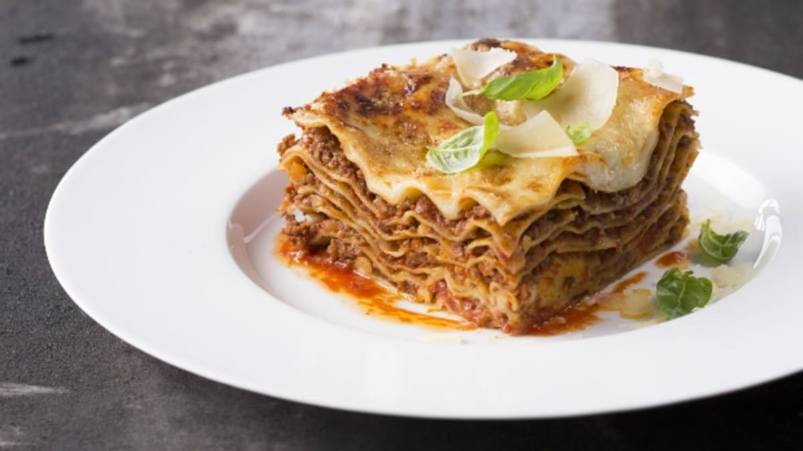

Lasagna

Try the famous Italian dish with Bolognese ragout prepared according to Zdenek Pohlreich.
When you make this delicacy at home, you might be surprised by its perfect taste.
Ingredients
- Lasagna noodles - 12 - 16 pcs
- Parmesan cheese - 100 g
Meat ragout
- Ground beef - 500 g
- Ground pork - 300 g
- Olive oil - 60 ml
- Carrot - 2 pcs
- Onion - 1 pcs
- Celery - About 1.5 cm thick slice
- Peeled tomatoes - 2 cans
- Garlic - 2 cloves
- Red wine - 500 ml
- Beef stock - 300 ml
- Nutmeg
- Rosemary
- Salt
- Pepper
Bechamel sauce
- Milk - 600 ml
- Butter - 45 g
- Flour - 45 g
- Onion - 1 pcs
- Nutmeg
- Bay leaf - 1 pcs
- Clove - 3 pcs
Steps
- Preheat the oven to 180 ˚C.
- First prepare the meat ragout. Heat a little olive oil in a pan and fry
the finely chopped onion together with the carrot and celery.
Sauté until the vegetables are soft and golden brown. It takes approximately
15 minutes. Add the garlic and rosemary and sauté for another two minutes.
- Add both types of ground meat to the base and continue to cook until all
the juices have boiled off.
Pour half of the red wine over the mixture,
stir and cook for approximately 35 minutes.
- Once the wine has boiled off, add the canned tomatoes and beef stock.
Cook uncovered for another 1.5 hours.
If necessary, add a little water
to the mixture. Salt and pepper to taste.
- In the meantime, prepare the bechamel sauce. Put the milk in a medium
saucepan and add the bay leaf.
Cut the onion in two halves, stick cloves
into it and add it to the saucepan with the milk.
Bring the milk almost
to the boil and cook over a low heat for about 5 minutes. Leave to cool.
- In the second saucepan, prepare the roux. Melt the butter, add the flour and
saute for approximately 30 seconds, stirring constantly with a wooden spoon.
Take the prepared roux off the heat and add strained milk to it.
Stir until the flour is completely dissolved in the milk.
- Return the saucepan to the stove and cook, stirring constantly,
until the sauce thickens, about 4 minutes.
Reduce the heat to low and simmer
for approximately 20 minutes. Once the sauce is glossy and smooth, add
he nutmeg and season with salt and pepper.
- Prepare a baking dish or a baking tray in which you will fold the individual layers.
First, you need to cook the lasagna in salted water with a drop of oil.
After a while, cool them with cold water to stop the "softening" process.
- Spread the prepared béchamel on the bottom of the baking dish, spread a layer
of lasagna on it and then add a layer of meat ragout.
Repeat the process until
you have used all the ingredients. The last layer consists of lasagna,
tomato ragout and béchamel.
Finally, add grated Parmesan cheese to the béchamel
layer.
- Place the baking dish in the oven for 30-45 minutes.
The surface of the lasagna must be beautifully golden, but not burnt!